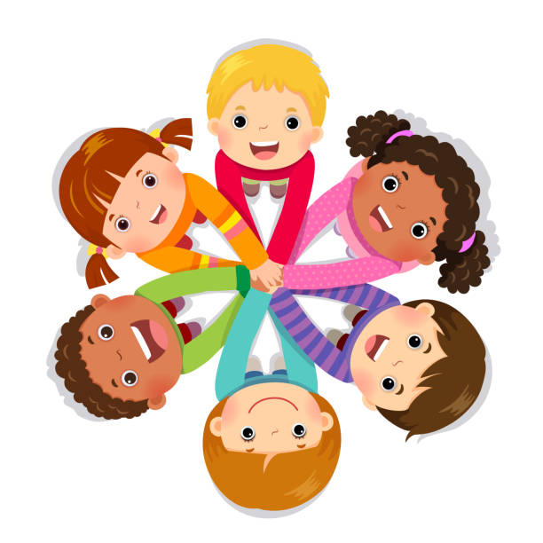

🚀
Mein Weg zur Kinderanimation
Mit Herz, Erfahrung, Kreativität und pädagogischem Wissen gestalte ich Kinderfeste liebevoll, sicher und altersgerecht.
🌟 Selbständigkeit & Ehrenamt
Seit 2026 Nebenberuflich selbständig in der Kinderanimation
Seit 2026 Obmann-Stellvertreterin bei den Kinderfreunden Hohenau
💼 Gruppenleitung & Betreuung
Seit 2024 Leitung der Schulischen Nachmittagsbetreuung
2023 – 2024 Kinderbetreuerin
2017 – 2019 Kindergartenassistentin bei der Stadt Wien
🎓 Ausbildungen
2026 Babysitter- & Au-pair-Zertifikat
2025 Zertifizierte Spielgruppenleiterin
2024 Zertifizierte Kinderschutzbeauftragte
2024 Ausbildung zur Kindergruppenpersonal / Tageseltern
2024 Zertifizierte Kinderanimateurin
2023 Ausbildung zur Kinderbetreuerin
